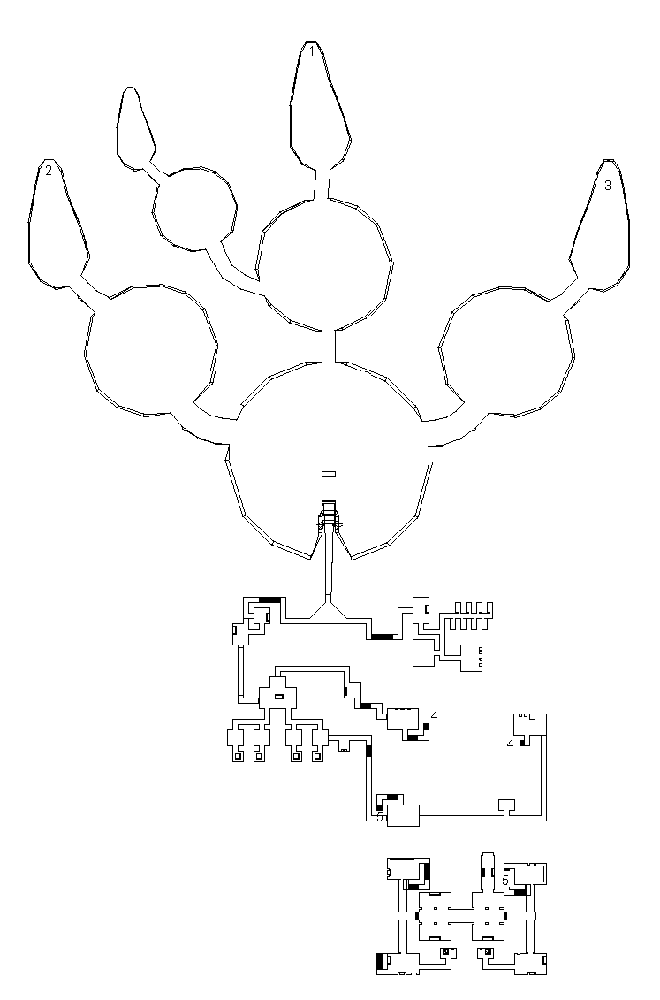

Blackshire: The Lair of the Wolf

| The Lair of the Wolf | |
| 1. | Entrance |
| 2. | Ghost of Balthasar, he asks you to find the Pearl of Putrescence |
| 3. | The Pearl of Purity is here walk all the way to the back of the room. |
| 4. | The stairs seem to trigger a transport to the other. |
| 5. | The stairs seem to trigger a transport to the other. |
There are three types of enemis here, all the forms for Ooze, Swordmen, and Werewolves. It only get's had when you are swarmend by the Greater Werewolves, they can be tough.
When you find the Werewolf Leader, you can kill him and get the Pearl of Putrescence .
it also appeard that certian doors, or points are triggers to regenerate monsters, I don't know how many times I had to clear the same hallway.
Leave us a message mgrounds@hotmail.com